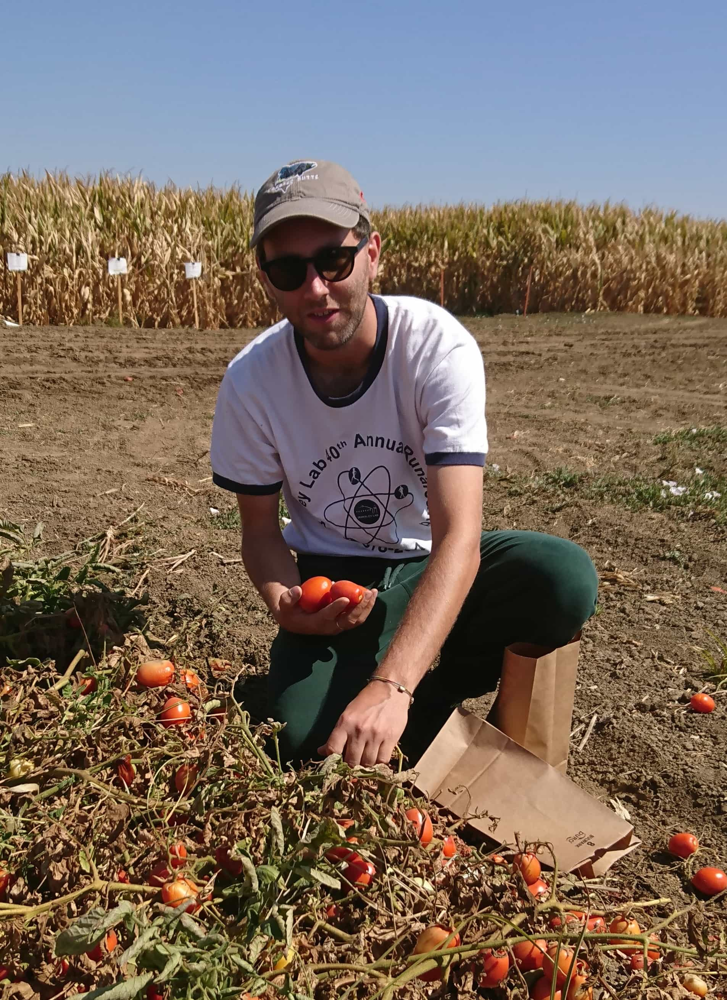
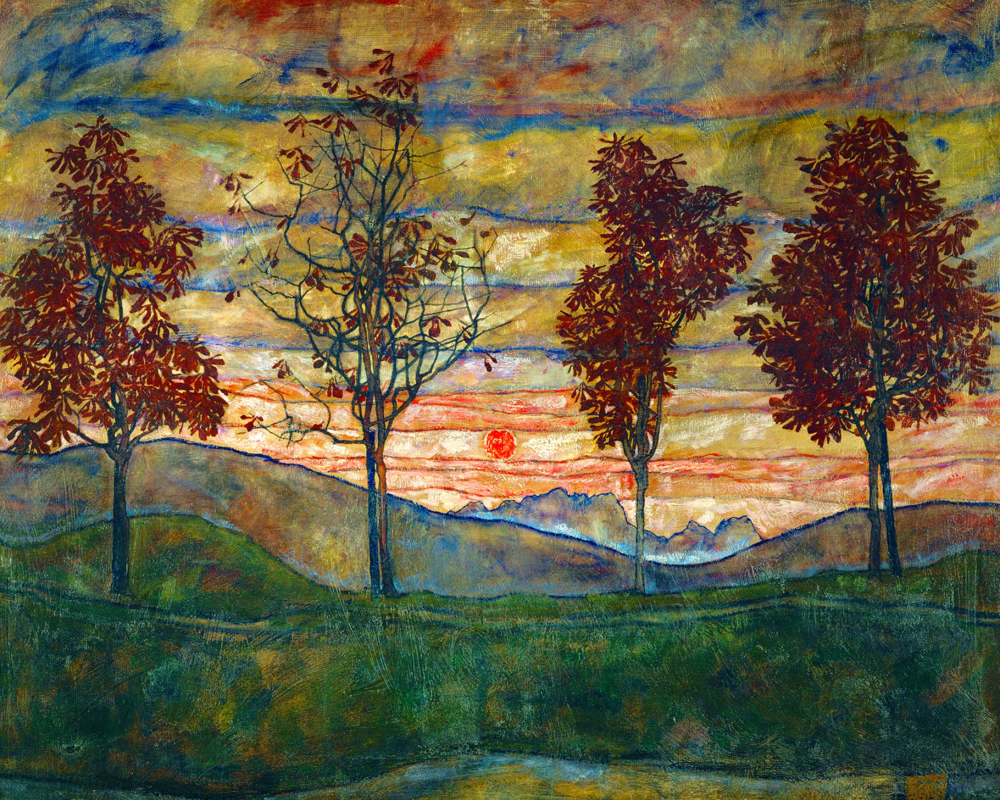
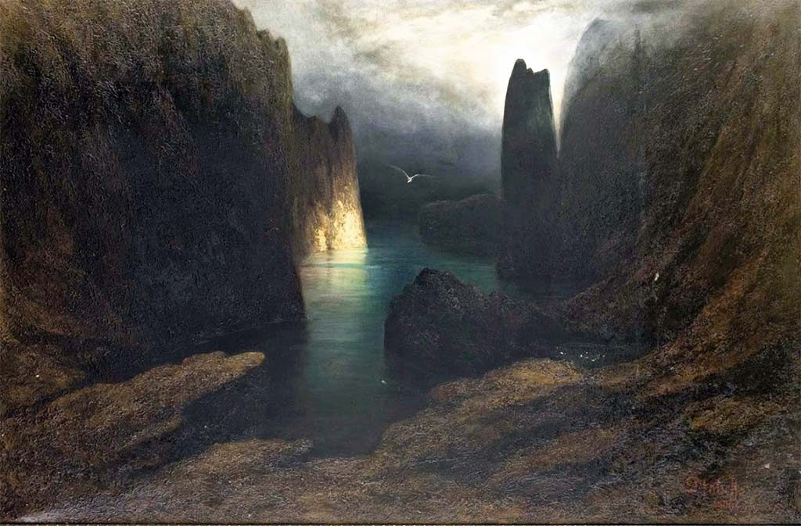

Luca Peruzzo

Current Position
I live in Berkeley, California, where I work as a postdoc at the Lawrence Berkeley National Laboratory, in the Geophysics Department - Earth & Environmental Sciences Area.
Education
B.S. Earth SciencesUniversity of Padova, 29 June 2012

I studied Geology in Padova, close to my hometown Vicenza.
I earned a bachelor's degree in Earth Sciences in June 2012.
This three-year program is structured as follow.
The first year covers the fundamentals of scientific disciplines, such as mathematics, physics, chemistry, and statistics.
The second year is dedicated to the "pure geology" subjects, for example mineralogy, petrology, sedimentology and sequential stratigraphy, geophysics, geography and geomorphology, and geological survey.
The third year focuses on more applied courses, including environmental geochemistry, applied and environmental geophysics, hydrology and hydrogeology, technical geology, and soil and rock mechanics.
I graduated under the supervision of Prof. Paolo Nimis and Prof. Gilberto Artioli with a thesis on the ore deposits in the Apennines ophiolites, Modena region.
The study was part of a bigger scientific project investigating ore deposits and their isotopic signature, also in relationship to the trades of metals and manufactures in the Copper Age (Artioli et al. 2017, Long-distance connections in the Copper Age: New evidence from the Alpine Iceman’s copper axe).
M.S. Geology and Technical GeologyUniversity of Padova, 2015
I continued my studies in Padova attending a master program in Geology and Technical Geology.
This two-year program offers three possible curricula, among which I chose Applied Geology.
Here, I could focus on environmental and engineering subjects and explore more advanced mathematical, physical, and numerical aspects.
I attended more in-depth courses on environmental geochemistry, applied/near-surface geophysics, technical geology, and hydrology-hydraulics.
The curriculum also provided opportunities to practice hydrogeology modeling, remote sensing image analysis, and geophysical field activities.
I graduated cum laude in March 2015 with a thesis in near-surface geophysics under the supervision of Prof. Giorgio Cassiani.
The thesis work characterized a reconstructed river embankment in the province of Padova; the coexistence and interaction of mechanical heterogeneities and water infiltration phenomena motivated the use of different geophysical methods.
This way, I had the opportunity to deepen my knowledge and interest in geoelectrical (ERT, GPR, and SP) and seismic methods.
Ph.D. in Environmental Geophysics
University of Bordeaux Montaigne - Lawrence Berkeley National Laboratory, June 2019
I completed a PhD in environmental geophysics at University Bordeaux Montaigne (UBM), a 3-year co-tutelage program with Lawrence Berkeley National Laboratory (LBL).
I worked under the supervision of Prof. Myriam Schmutz (UMB) and the Dr. Susan Hubbard (LBL).
I spent the initial one and a half years in Bordeaux.
During this period, I focused on the use of the Spectral Induced Polarization (SIP) method for investigating pore fluid chemistry and related complexation processes.
To strengthen the interpretation of the SIP results I also performed adsorption/chemical extraction experiments and included complexation modeling (PHREEQC and PEST).
I also took part to some multidisciplinary field investigations focusing on grapevines and their relationship to above- and below ground chemical and physical factors.
I then moved to Berkeley for the second half of my PhD, here, I focused on the use of geoelectrical approaches for characterizing soil hydrological processes and root-soil interactions.
To this end, we also developed a novel approach based on the inversion of the current source density distribution to image the current pathways in the root-soil system, to provide noninvasive phenotyping capabilities and new insights on the root uptake of water and solutes.
We also explored the use of geoelectrical approaches for characterizing the soil-plant-atmosphere continuum in terms of water content and potential.
Thanks to collaborations with Noble Research Institute and UC Davis I had the opportunity to test the use of multi-channel SIP measurements as novel bioimpedance method for root phenotyping.
Publications
Imaging of Plant Current Pathways for Non-invasive Root Phenotyping using a newly developed Electrical Current Source Density Approach.
Peruzzo L, Chunwei C, Wu Y, Schmutz M, Mary B, Petrov P, Gregory N, Blancaflor BE, Xiuwei L, and Hubbard SS.
(2020) Plant and Soil
http://doi.org/10.1007/s11104-020-04529-w
Time-lapse monitoring of root water uptake using electrical resistivity tomography and Mise-à-la-Masse: a vineyard infiltration experiment.
Mary B, Peruzzo L, Boaga J, Cenni N, Schmutz M, Wu Y, Hubbard SS, and Cassiani G.
(2020) SOIL
https://doi.org/10.5194/soil-6-95-2020
Effects of salinity and pH on the spectral induced polarization signals of graphite particles.
Wu Y, and Peruzzo L.
(2020) Geophysical Journal International
https://doi.org/10.1093/gji/ggaa087
Small-scale characterization of vine plant root water uptake via 3-D electrical resistivity tomography and mise-à-la-masse method.
Mary B, Peruzzo L, Boaga J, Schmutz M, Wu Y, Hubbard SS, and Cassiani G.
(2018) Hydrol. Earth Syst. Sci.
https://doi.org/10.5194/hess-22-5427-2018
The relative importance of saturated silica sand interfacial and pore fluid geochemistry on the spectral induced polarization response.
Peruzzo L, Schmutz M, Franceschi M, Wu Y, and Hubbard SS.
(2018) Journal of Geophysical Research: Biogeosciences
https://doi.org/10.1029/2017JG004364
Combined geophysical surveys for the characterization of a reconstructed river embankment.
Busato L, Boaga J, Peruzzo L, Himi M, Cola S, Bersan S, and Cassiani G.
(2016) Engineering Geology
https://doi.org/10.1016/j.enggeo.2016.06.023
Reviews:
IEEE Transactions on Geoscience and Remote Sensing (2)
AGU Journal of Geophysical Research: Biogeoscinces
Near Surface Geophysics (3)
Vadose Zone Journal (3)
Scientfic Reports
AGU Book Proposal
Archives of Agronomy and Soil Sciences (2)
Conferences and Events
4th International Workshop on Induced Polarization, Aarhus, Denmark, 6 - 8 June 2016
Poster, Evaluation of copper mobility with SIP and geochemical analysis: first results
2016 American Geophysical Union Fall Meeting, San Francisco, USA (CA), 12 - 16 December 2016
Poster, Characterization of copper concentration in sand and clay using SIP measurements
5th International Workshop on Induced Polarization, Rutgers Univ. - Newark, USA (NJ), 3 - 5 October 2018
Poster, Bioelectrical impedance spectroscopy and ERT plant-soil system characterization
2018 Society of Exploration Geophysicists Annual Meeting, Anaheim, USA (CA), 14 - 19 October 2018
Talk, Geoelectrical investigation of root-soil interaction
Machineries of Doubt – Climate, Cigarettes, Confusionnfusion
EESA at Berkeley Laboratory, January 2020
Dr. John Mashey
The carbon balance of forests from machine learning using age and climate
Distinguished Scientist Seminar Series, EESA at Berkeley Laboratory, July 2018
Dr. Philippe Ciais
Api, agricoltura e pesticidi
Bees, agriculture and pesticides
Symposium of International Society of Doctors for Environment, Padova, September 2015
Prof. Gianni Tamino, Dr. Stefano Cremasco, and Dr. Carmelo Motta
Zolle, storie di tuberi, graminacee e terre coltivate
Soil clumps, stories of tubers, grasses, and croplands
Book presentation and discussion, at the botanic garden of Padova, May 2015
Prof. Stefano Bocchi, Prof. Francesco Morari, and Prof. Telmo Pievani
Computer interests
Python, Rust, MATLAB, SQLite, GIT, Geophysical Modeling and Inversion (BERT, R3t, R2, pyGIMLI), Parameter Estimation and Uncertainty Analysis (PEST, Python), Web Scraping, Geochemical modeling (PHREEQC), Mesh generation (Gmsh), Bash and util-linux, LaTex, InkScape, MS Office.
Basic level: C, SSH, and HTML.
More about me

Childhood in Italy
I was born in 1989 in Vicenza, in the northeastern part of Italy.
I grew up in the country town of Dueville, about 20 km north of Vicenza, along the spring belt of the Alps.
My parents passed down to me the passion for outdoor activities and traveling.
I often spent the weekend relaxing outdoor and fishing with my father and brother, and my mother organized unforgettable travels.
My wife and I got married in Trieste on a sunny day in February 2019.
Sports
I have practiced and enjoyed different sports.
As a child I played soccer for a couple of years, but I then preferred basketball, which I played for 15 years and gave me great companions and memories.
In recent years, my brother and I took up climbing and biking with some friends.
These hobbies are also a better fit for my recent periods abroad and have been easier to share with the people I met.
Nevertheless, I still love to play basketball when I get the chance.
During the one and a half years I spent in Bordeaux, a colleague and I took advantage of the college swimming pool and regularly practiced swimming, especially early in the morning - quite refreshing, not sure where we found the motivation to start though :)
Scientific and Technical Books I Liked
Numerical Recipes, The Art of Scientific Computing, by W. H. Press, B. P. Flannery, S. A. Teukolsky, and W. T. Vetterling.
Conservative Finite-Difference Methods on General Grids, by Mikhail Shashkov
Quantum Enigma: Physics encounters consciousness, by Bruce Rosenblum and Fred Kuttener.
Div, Grad, Curl and All That - An Informal Text on Vector Calculus, by Harry Moritz Schey.
Linear Algebra and Its Applications, by Gilbert Strang.
Linear Algebra and Learning from Data, by Gilbert Strang.
Geophysical Data Analysis: Discrete Inverse Theory, by William Menke.
Hydrogeophysics, by Yorum Rubin and Susan S. Hubbard.
Calibration and Uncertainty Analysis of Complex Environmental Problems, Doherty John.
The Fourier Transform and its Applications, by Brad Osgood.
The Craft of Scientific Writing, by Michael Alley.
Introduction to Mathematical Statistics, by Paul G. Hoel.
Some other Books
Where We Go from Here, by Bernie Sanders. 2018.
The alchemist, by Paulo Coelho. 1988.
By the river Piedra I sat down and cried, by Paulo Coelho. 1994.
The pilgrimage, by Paulo Coelho. 1987.
The name of the rose, by Umberto Eco. 1980.
Gulliver's Travels, by Jonathan Swift. 1726.
The red lines, by Federico Rampini. 2017.
Tender to the bone: growing up at the table, by Ruth Reichl. 1998.
Embers, by Sándor Márai. 1942.
On the Black Hill, by Bruce Chatwin. 1982.
The royal game (Chess Story), by Stefan Zweig. 1942.
Hanta Yo, by Ruth Beebe Hill. 1979.
Sophie's World, by Jostein Gaarder. 1991.
Democracy and its Limits, by Sabino Cassese. 2017.
The Life and Games of Mikhail Tal, by Mikhail Tal. 1997.
Websites I Recommend
Barry Smiler, likely the best website on climate change I encountered so far, with a comprehensive and well-curated list of notable scientific and governmental resources, but also videos and more.
Smiler's website.
ContraPoints, a talented and knowledgeable youtuber whose videos explore topics such as social justice, politics, and philosophy.
ContraPoints Homepage.
Favorite Artists

Karl Wilhelm Diefenbach, Franz von Stuck, Egon Schiele, Mariano Fortuny (The Wagnerian Parsifal cycle by Mariano Fortuny, at Palazzo Fortuny in Venice).
